PACT Hand
Posture-Aligned Co-Design Technique for Hand Configuration and Retargeting in Multi-Finger Imitation Learning
A 17-servo anthropomorphic hand co-designed with the posture retargeter that drives it. One law serves as the design objective, the evaluation metric, and the runtime controller.
Supplementary video
Human posture in, contact over the whole finger out
Compared with the LEAP Hand and a fingertip-only ablation, each evaluated with the same retargeting pipeline and, on hardware, under the same per-joint torque cap.
The fidelity of teleoperated demonstrations used for imitation learning is determined by how faithfully a robot hand can replicate the operator’s posture. The posture retargeting law that the robot will ultimately execute is typically selected only once the hardware has been finalized. Conventional hand designs are derived from established mechanical principles, so they often neglect human-like grasping postures, which constrains the potential of learning-based dexterous manipulation. We introduce PACT, an optimization based on human grasping postures that jointly optimizes the mechanical parameters of a 17-servo robot hand (link lengths, joint offsets, mounting angles, and base placements) and its nonlinear posture retargeter (a linear human-to-robot joint map, per-joint posture-IK weights, and damping). The optimization enforces full-finger correspondence (MCP, PIP, DIP, and tip of each finger) to human poses from the DexYCB dataset, and is also constrained by physical requirements such as servo interference, assembly clearances, and flat-hand protrusion, so the resulting design can be physically assembled.
We fabricate the PACT Hand and validate it through teleoperation experiments and an imitation-learning demonstration. The proposed hand reproduces all human hand keypoints with a kinematic root-mean-square error (RMSE) of 3.9 mm, compared to 12.8 mm for the LEAP Hand baseline, and keeps all fingertips within 10 mm on every grasping posture, while the baseline achieves this for only 21.6% of the poses. Under matched per-joint torque limits, the proposed hand lifts twice the baseline payload, 2 kg against 1 kg, and deforms a held paper cup seven times less, reaching a deformation level comparable to a human hand. It also achieves an 86% grasping success rate on YCB daily objects, compared to 64% for the baseline. Finally, as a demonstration, an imitation-learning policy trained on demonstrations collected with the PACT Hand achieved a 75% success rate at held-out placements in a can pick-and-place task.
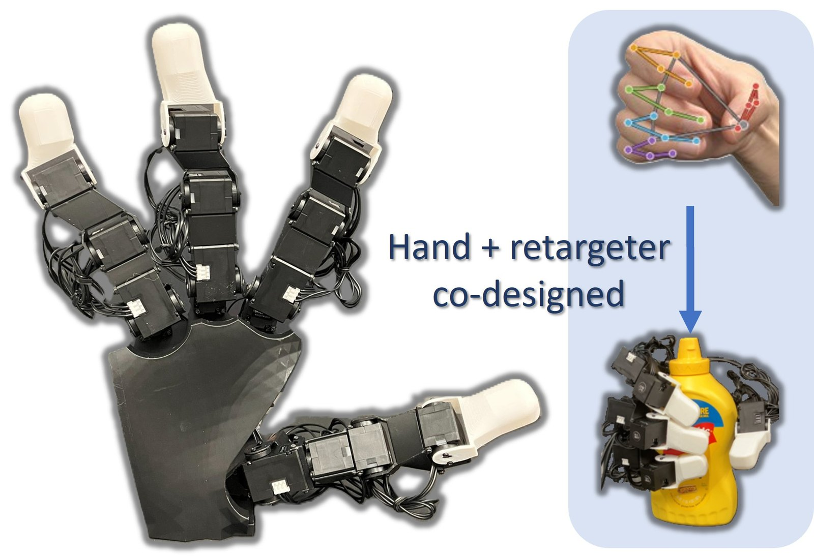
One law for design, evaluation, and runtime
The retargeter that runs on a robot hand is usually chosen after the hardware is frozen. In PACT it is part of the design: the mechanism parameters (link lengths, joint offsets, mounting angles, base placements) and the retargeter parameters ρ = (M, w, λ²), a linear human-to-robot joint map, per-keypoint IK weights and damping, are optimized together. The objective is the residual of that same retargeter over recorded human grasps.
The retargeter is a design variable
The optimized rule (M, w, λ²) is saved with the hardware and loaded unmodified at runtime, so design, evaluation, and physical operation all execute the same law.
Posture, not fingertips
The MCP, PIP, DIP, and tip of every finger are matched to human grasping poses from DexYCB. Matching fingertips alone leaves the intermediate joints free to drift into non-human configurations.
Buildable by construction
Servo-housing interference, a measured assembly clearance, and flat-palm protrusion enter the same objective one stage at a time, each stage guarded against giving back tracking accuracy.
Watch the thumb. Collision avoidance at S1 pushes it away from the human skeleton (gray); the MCP axis anchor added at S2 pulls it back by S5. Each label lists the constraints added since the previous frame.
Fabrication constraints, one stage at a time
- S0Tracking accuracy only: the accuracy ceiling of the kinematic family.
- S1No collision between any two servo housings, across the whole pose distribution.
- S2Robot MCP axes coincide with the human MCP centers.
- S3Fingertip pads stay within 20° of the human pad orientation.
- S4No geometry protrudes below the flat palm.
- S5The retargeter parameters ρ become design variables.
- S6A measured assembly clearance between stacked servos.
Each stage warm-starts from the previous one. From S1 on, a one-sided guard penalizes any per-finger tracking term that rises more than 10% above its value at the start of the stage. The pipeline, including forward kinematics and the unrolled 20-iteration IK, is differentiable in PyTorch.
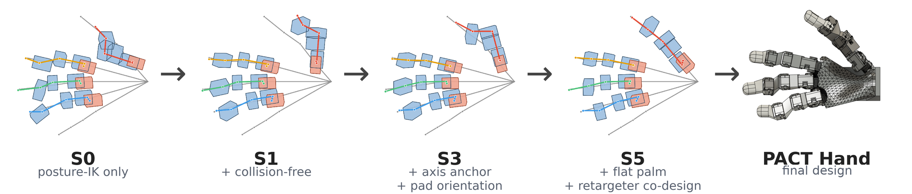
The PACT Hand
The optimized mechanism, fabricated from Dynamixel servos and 3D-printed brackets. All bracket geometry is exported directly from the optimized parameters, with no manual re-dimensioning between optimization and fabrication.
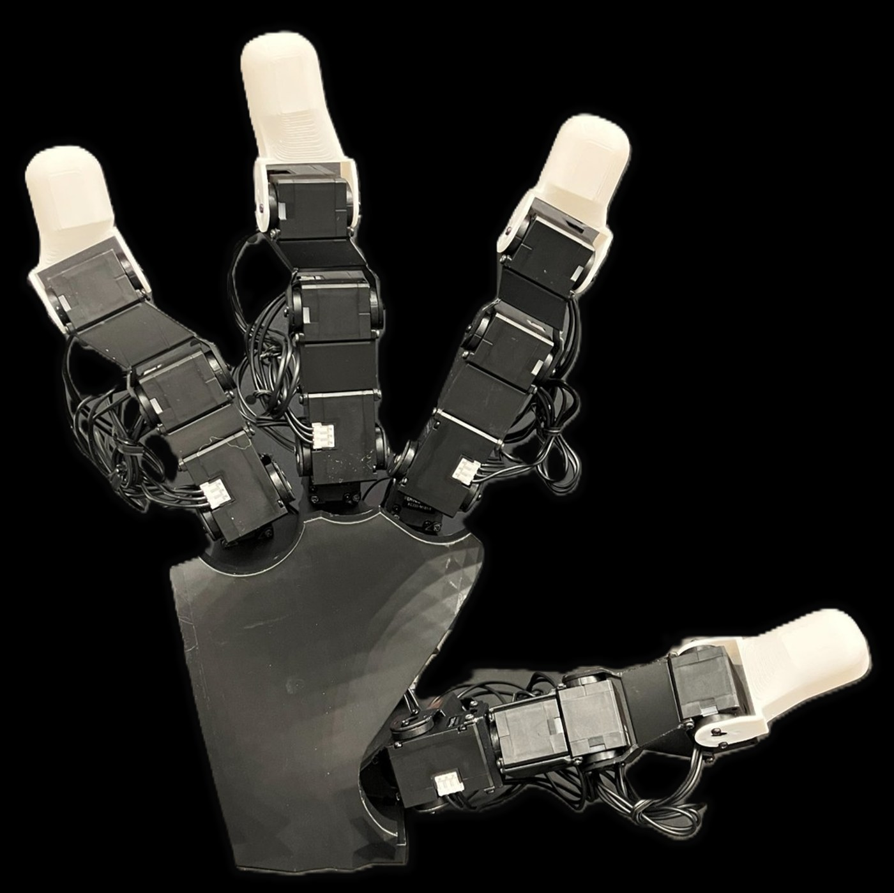
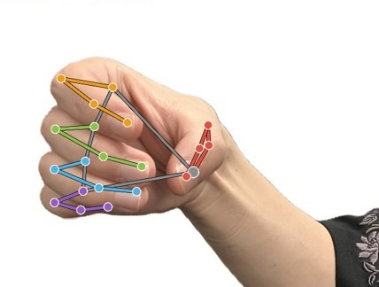
Full-finger correspondence. The keypoints matched in the optimization: MCP, PIP, DIP and tip of every finger. Inside the IK, the PIP, DIP and tip keypoints each carry one shared weight; the MCP is matched through where the finger base sits on the palm.
- Digits
- Thumb, index, middle, ring. The four-digit layout follows the LEAP Hand, which likewise omits the little finger.
- Actuators
- 17 Dynamixel servos: four in each finger, five in the thumb. LEAP Hand: 16.
- Joint modules
- Two-axis MCP module on each finger, three-axis CMC module on the thumb.
- Distal chain
- Serial servo chains mounted dorsally, housings opposite the finger pads; the final pair stacked case to case.
- Scale
- 1.56× human, the mean ratio of the LEAP Hand’s kinematic chain length to human finger length. Chosen to match the baseline, not as a lower limit.
- Chain length
- 153–161 mm per finger, distributed with human proportions. LEAP Hand: 145–153 mm, concentrated in actuator housings and a rigid 50 mm fingertip block.
- Servo housing
- XC330 envelope, used in the optimization and shared by the servos of the physical hand.
- Teleoperation
- One RGB camera → WiLoR (MANO) → the posture-IK rule saved with the design → servos, at roughly 23 Hz.
The whole finger lands where the human’s does
Operator poses come from a single RGB camera. No per-user calibration or parameter tuning was performed in any experiment: the retargeter saved with the design was deployed as is.
Best / median / worst training pose
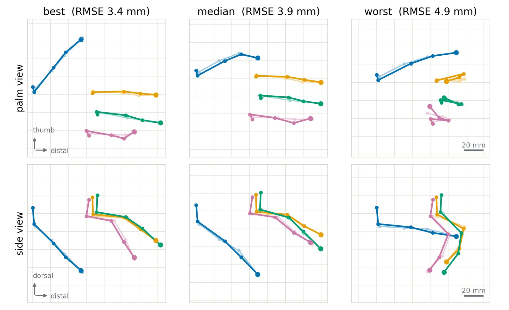
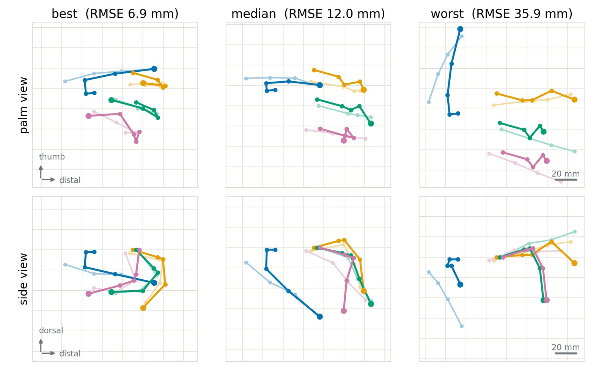
| Hand | Set | All-kp RMSE | Tip RMSE | MCP/PIP | IP/DIP | HPCR |
|---|---|---|---|---|---|---|
| PACT (17) | train | 3.90 | 1.84 | 4.39 | 4.80 | 100.0% |
| PACT (17) | test | 3.88 | 1.66 | — | — | 100.0% |
| LEAP Hand | train | 12.82 | 13.45 | 14.13 | 10.60 | 21.6% |
| LEAP Hand | test | 13.09 | 13.59 | — | — | 7.9% |
| Tip-only (16) | train | 23.66 | 2.46 | 26.33 | 31.31 | 99.5% |
| Tip-only (16) | test | 22.79 | <0.01 | — | — | 100.0% |
The worst beats the best
Pose-wise all-keypoint RMSE, best / median / worst: 3.4 / 3.9 / 4.9 mm for PACT against 6.9 / 12.0 / 35.9 mm for the LEAP Hand. PACT’s worst training pose is still more accurate than the baseline’s best.
Objects never seen in design
On 1,421 grasps of twelve YCB objects absent from the design set, PACT degrades by 0.16 mm (3.90 → 4.06) and keeps 99.6% HPCR. The one grasp type missing from the design set, the pitcher’s handle, is the costliest at 4.74 mm.
What the co-designed retargeter adds
With the retargeter reset to its default, the hardware alone reaches 3.47 mm and 100% HPCR, 3.7× better than LEAP. The co-designed rule moves accuracy to the contact interface: tip RMSE 2.88 → 1.84 mm for a 0.43 mm all-keypoint concession.
Baselines. The LEAP Hand runs the identical posture-IK pipeline on its published kinematics. The tip-only ablation is optimized with the full PACT pipeline and all physical constraints, but its human-matching objective covers fingertips only, at design time and in the runtime IK; it ends up with 16 actuators, the LEAP budget. Accuracy is computed by forward kinematics on the commanded joint configurations.
Same torque per joint, different hands
All hardware comparisons run current-based position control with each motor’s commanded current set from its torque constant, so every joint of every hand operates under an identical torque cap. Each hand is mounted on a UR5e arm.
Payload: 1300 g at 0.167 N·m
A rigid 3D-printed replica of the YCB master chef can (102 mm in diameter), loaded so its center of mass sits at the grasp band. The grasp was teleoperated once per hand and the recorded command replayed identically in every trial; the UR5e then executes one fixed lift of 150 mm at 50 mm/s with a 3 s hold.
swipe for all three hands →
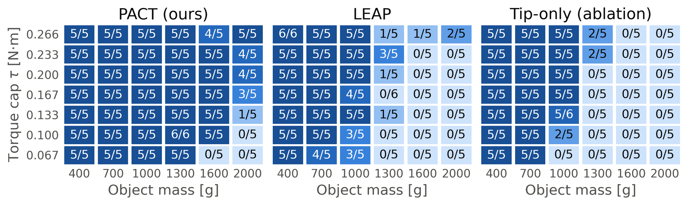
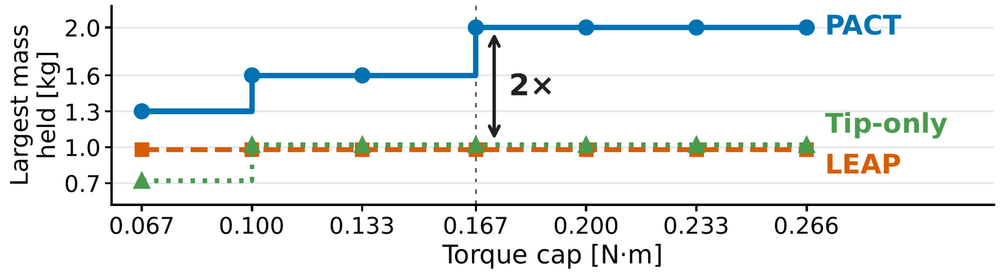
Each hand at its capacity
The largest mass each hand holds reliably, shown at the cap where the clip was recorded. Neither baseline reliably holds anything heavier under any cap, so at the common 0.167 N·m their capacity is also 1000 g.
swipe for all three hands →
A compliant object: a 400 g paper cup
The grasp is replayed identically in every trial. All 75 robot trials held the cup, so what separates the hands is deformation, not holding. A red band on the inner wall is detected from above; its circularity 4πA/P² is taken after mapping the same trial’s pre-grasp rim to a unit circle, so 1.000 is that trial’s own undeformed rim.
swipe for all three hands →
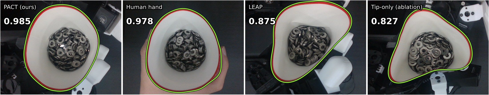
| Hand | Circularity | Departure vs. PACT |
|---|---|---|
| PACT Hand | 0.9847 ± 0.0020 | 1× |
| Human hand | 0.9777 ± 0.0089 | reference |
| LEAP Hand | 0.8752 ± 0.0120 | 7× |
| Tip-only | 0.8272 ± 0.0304 | 11.3× |
On par with a human hand. The LEAP Hand departs from a circle seven times more than PACT (0.125 against 0.015), the tip-only ablation 11.3 times. Trial-to-trial spread is 6.1× and 15× that of PACT although the same recorded grasp is replayed every time, and only the tip-only hand deforms the cup measurably more as the cap rises: contact concentrated on fingertips converts torque straight into deformation.
Everyday objects: ten YCB objects, teleoperated live
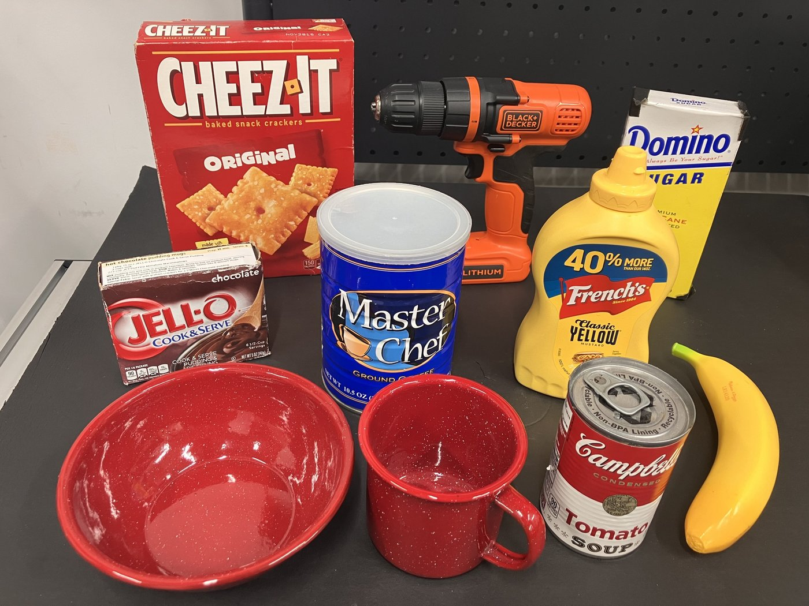
One grasp strategy per object, chosen in advance, for all three hands. A single operator teleoperates live at a fixed 0.167 N·m cap; a trial succeeds if the hand lifts the object and holds it for 3 s. Five scored trials per object and hand, at most 60 s of teleoperation each.
| Object | PACT | LEAP | Tip-only |
|---|---|---|---|
| master chef can | 5/5 | 3/5 | 2/5 |
| cracker box | 4/5 | 2/5 | 0/5 |
| sugar box | 5/5 | 5/5 | 4/5 |
| tomato soup can | 2/5 | 4/5 | 0/5 |
| pudding box | 5/5 | 4/5 | 5/5 |
| banana‡ | 5/5 | 3/5 | 0/5 |
| bowl‡ | 4/5 | 3/5 | 4/5 |
| mug† | 3/5 | 1/5 | 0/5 |
| mustard bottle† | 5/5 | 2/5 | 0/5 |
| power drill† | 5/5 | 5/5 | 1/5 |
| all | 43/50 (86%) | 32/50 (64%) | 16/50 (32%) |
Total teleoperation time divided by successes. Counting unfinished trials at the 60 s limit, the median trial takes 8.1 s and 12.8 s for the first two hands and the full 60 s for the tip-only design; PACT is faster on all ten objects.
Trials, object by object
Each clip plays one recorded trial without cuts, sped up to about 12 s (factor marked). The outcome shown is the one that occurred in the majority of that hand’s five scored trials.
swipe for all three hands →
Never seen during design. The LEAP Hand tips the bottle over during the grasp; the tip-only hand lifts it and drops it.
swipe for all three hands →
The banana carries a band of grip tape, identical for every hand. The tip-only hand rises while the banana stays on the table.
swipe for all three hands →
The handle is sized for human fingers and is inaccessible at 1.56× scale, so the mug is always grasped from above. This top-down grasp is one of the two places PACT fails.
swipe for all three hands →
The tip-only hand keeps trying to close a grasp that never lifts the can.
swipe for all three hands →
Where PACT trails. The slender soup can is the one object of ten on which PACT scores below the LEAP Hand: at 1.56× scale its fingertips are oversized for small features.
Failure modes. The LEAP Hand slips, lets objects twist in hand, and moves fingers involuntarily when its IK jumps between joint configurations that reach the same fingertip target: it initiates grasps but fails to maintain them. The tip-only hand’s dominant failure is the object slipping out between the fingers; it never forms a continuous holding surface. PACT’s failures are confined to the slender soup can and the top-down mug grasp. The heaviest object, 859 g, stays below the 1 kg capacity measured for the LEAP Hand, so these failures are contact failures, not load failures.
Arm–hand teleoperation and imitation learning
A GELLO leader arm drives the UR5e while the same retargeter drives the hand from the camera. Each clip is shown end to end; the speed-up is marked.
swipe for all three demonstrations →
Imitation learning with an ACT policy
An ACT policy trained on 54 teleoperated demonstrations of can-to-tray pick-and-place, collected with the PACT Hand, runs autonomously: 94% success at taught placements (17 of 18 trials) and 75% at held-out ones (9 of 12). It is shown as a demonstration of the intended use rather than as a contribution.
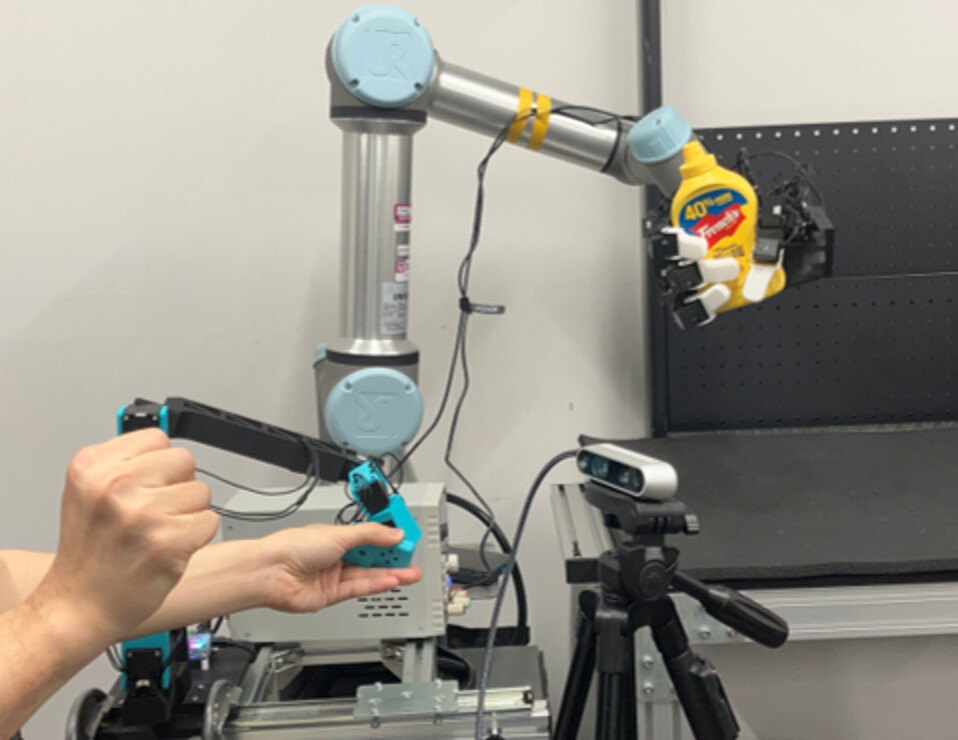
Release
Hardware files and code will be released upon publication.
Parts
Bill of materials: servos, printed parts, fasteners and electronics.
upon publicationCAD
Printable parts of the final design.
upon publicationAssembly
Build and wiring guide.
upon publicationSoftware
Retargeter and teleoperation code.
upon publicationCitation
BibTeX for the paper under review.
available ↓BibTeX
@article{anonymous2026pact,
title = {PACT: Posture-Aligned Co-Design Technique for Hand Configuration
and Retargeting in Multi-Finger Imitation Learning},
author = {Anonymous},
note = {Under review},
year = {2026}
}